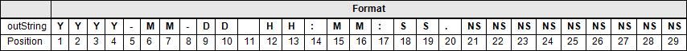

Diese Funktion konvertiert eine Zeichenkette (String) im internationalen Format (ISO 8601) mit Datums- und Zeitkomponenten in den Datentyp DTL.
| LGF_StringToDTL_ISO (FC) | ||||||||
|---|---|---|---|---|---|---|---|---|
| String | date | Ret_Val | DTL | |||||
| error | Bool | |||||||
| status | Word | |||||||
| Bezeichner | Datentyp | Beschreibung |
|---|---|---|
| date | String | Datum als Zeichenkette entsprechend dem Format. Beispiel: `2019-01-22 14:07:57.696417000`. |
| Bezeichner | Datentyp | Beschreibung |
|---|---|---|
| Ret_Val | DTL | Das konvertierte Datum und die Zeit im Format DTL |
| error | Bool | FALSE: Kein Fehler TRUE: Während der Ausführung des FB ist ein Fehler aufgetreten |
| status | Word | 16#0000-16#7FFF: Status des FB 16#8000-16#FFFF: Fehleridentifikation (siehe folgende Tabelle) |
| Code / Wert | Bezeichner / Beschreibung |
|---|---|
| 16#0000 | STATUS_FINISHED_NO_ERROR Status: Abarbeitung ohne Fehler beendet |
| 16#7000 | STATUS_NO_JOB Status: Kein aktueller Auftrag in Bearbeitung |
| 16#8201 | ERR_FORMAT_YEAR Fehler: JAHR außerhalb des Wertebereiches von DTL - Jahres Angabe entspricht nicht dem Format oder Angabe |
| 16#8202 | ERR_FORMAT_MONTH Fehler: MONAT außerhalb des Wertebereiches von DTL - Monats Angabe entspricht nicht dem Format oder Angabe |
| 16#8203 | ERR_FORMAT_DAY Fehler: TAG außerhalb des Wertebereiches von DTL - Tages Angabe entspricht nicht dem Format oder Angabe |
| 16#8204 | ERR_FORMAT_HOUR Fehler: STUNDE außerhalb des Wertebereiches von DTL - Stunden Angabe entspricht nicht dem Format oder Angabe |
| 16#8205 | ERR_FORMAT_MINUTE Fehler: MINUTE außerhalb des Wertebereiches von DTL - Minuten Angabe entspricht nicht dem Format oder Angabe |
| 16#8206 | ERR_FORMAT_SECOND Fehler: SEKUNDE außerhalb des Wertebereiches von DTL - Sekunden Angabe entspricht nicht dem Format oder Angabe |
| 16#8207 | ERR_FORMAT_NANOSECOND Fehler: NANOSEKUNDE außerhalb des Wertebereiches von DTL - Nanosekunden Angabe entspricht nicht dem Format oder Angabe |
| 16#8400 | ERR_DATE_STRING_EMPTY Fehler: Die Eingabezeichenfolge `date` ist leer. |
| 16#8401 | ERR_DATE_STRING_TO_SHORT Fehler: Die Eingabezeichenfolge `date` ist zu kurz – das Minimum ist `YYYY-MM-DD HH:MM:SS`. |
Der Baustein liest ein Datum als Zeichenkette ein und konvertiert dieses in den Datentyp DTL. Die einzelnen Datums- und Zeitkomponenten in der Zeichenkette werden entsprechend dem internationalen Format (ISO 8601) separiert. Dabei ist das Trennzeichen zwischen den Komponenten in der Zeichenkette irrelevant.

| Version & Datum | Änderungsbeschreibung | |
|---|---|---|
| 1.0.0 | Siemens Industry Online Support | |
| 15.06.2016 | First released version | |
| 1.0.1 | Siemens Industry Online Support | |
| 02.01.2017 | Upgrade: TIA Portal V14 Update 1 | |
| 1.0.2 | Siemens Industry Online Support | |
| 17.08.2018 | Upgrade: TIA V15 Update 2 | |
| 1.0.3 | Siemens Industry Online Support | |
| 23.11.2018 | Upgrade: TIA V15.1 | |
| 1.0.4 | Simatic Systems Support | |
| 17.07.2019 | Reworked from "LGF_StringToDTL" to "LGF_StringToDTL_ISO" Removed format and split into two blocks Bugfix - set weekday correctly Correction of the weekday of DTL, comments added Add ENO handling, adjust comments in interface | |
| 3.0.0 | Simatic Systems Support | |
| 23.04.2020 | Set version to V3.0.0 Harmonize the version of the whole library | |
| 3.0.1 | Simatic Systems Support | |
| 23.02.2021 | Insert documentation | |
| 3.1.0 | Simatic Systems Support | |
| 31.07.2025 | Fix bug - missing error code in case of wrong date string | |